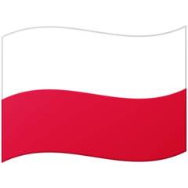

<app-toolbar>
    <ng-template #parent class="toolbar">
        <a class="menu-item" mat-button *ngIf="!sidenav.opened">
            <mat-icon class="toolbarHamburger" (click)="sidenav.toggle()" id="hamburger">
                expand_more
            </mat-icon>
        </a>

    </ng-template>
</app-toolbar>
<mat-sidenav-container class="settings-container">
    <mat-sidenav class="sidenav mat-elevation-z4" #sidenav>
        <mat-nav-list>
            <button mat-button class="menu-button" (click)="sidenav.toggle()">
                <mat-icon id="hamburger">chevron_left</mat-icon>
            </button>
            <mat-divider></mat-divider>
            <button mat-button class="menu-button">
                <mat-icon class="icon_text">password</mat-icon>
                <span>Password</span>
            </button>
            <p>Select Language</p>
            
            <div></div>
            
        </mat-nav-list>
    </mat-sidenav>

    <mat-sidenav-content>
        <div class="content mat-elevation-z4">
            <div>coi</div>
            <router-outlet></router-outlet>
        </div>
    </mat-sidenav-content>
</mat-sidenav-container>